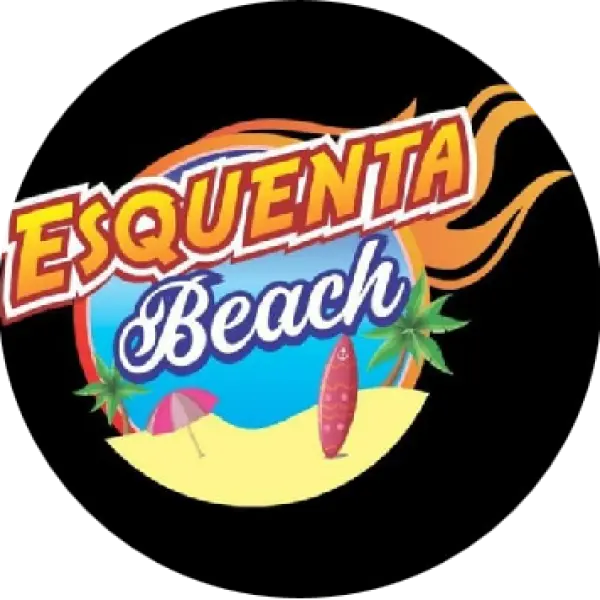
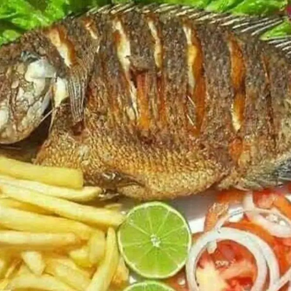
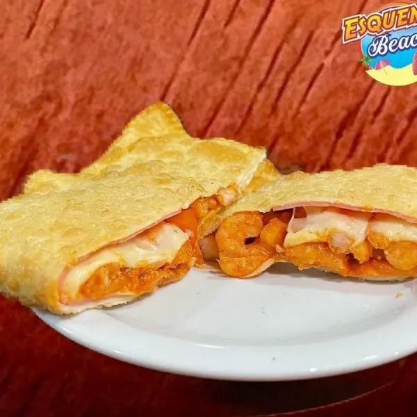
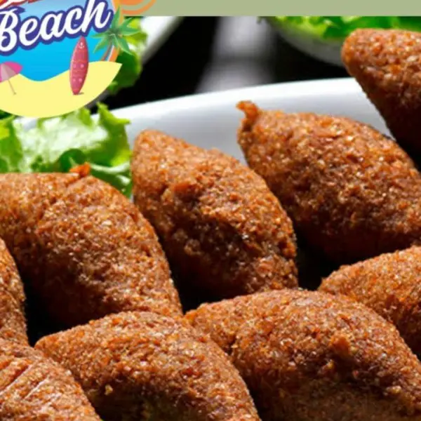
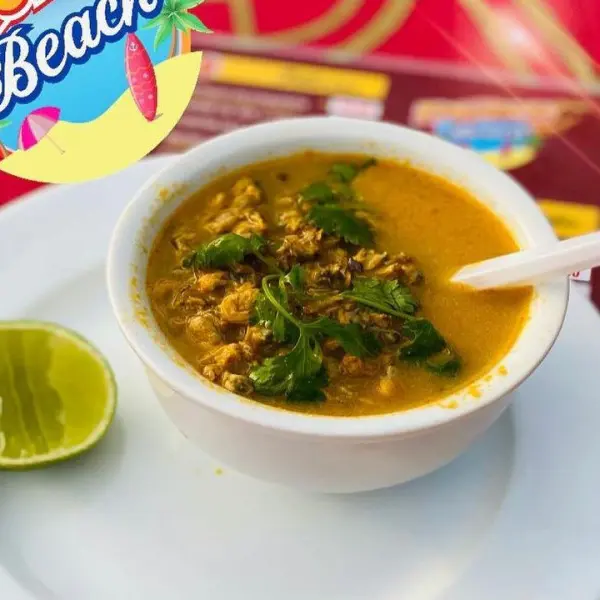
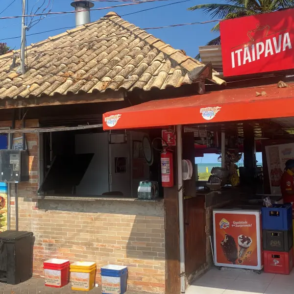

Camarão alho e óleo
Camarão preparado com alho e óleo.

Falar pelo InstagramQuiosque · Cabo Branco · João Pessoa
Da porção para compartilhar à refeição, escolha o que combina com seu dia na orla. A gente te espera no Esquenta Beach.
Ver nosso cardápio
Da nossa mesa, na orla de Cabo Branco.
O encontro acontece por aqui
Nosso quiosque está à beira-mar em Cabo Branco, com mesas ao ar livre para você escolher o ritmo do dia.
Confira as opções de petiscos e refeições no cardápio e escolha o que vai chegar à sua mesa.
Explorar o cardápioEscolha no cardápio o que você quer para a sua mesa. Para as refeições de compartilhar, confira a indicação de cada prato.




Além dos petiscos
No cardápio, você encontra caldinho de feijão e pastel de camarão com cream cheese. Consulte também as opções de ensopados do quiosque.
Escolher no menuO Esquenta está aqui
Nosso quiosque fica na ilha 6, em frente ao número 1538, na orla de Cabo Branco, João Pessoa.
Temos mesas ao ar livre. Wi-Fi e acesso para cadeirantes estão entre as comodidades da casa.
Ver o quiosque no mapa
Esquenta Beach · João Pessoa
Confira nosso cardápio e acompanhe as novidades no perfil oficial. Para conversar com a equipe, fale com a gente pelo Instagram.
O botão “Ver cardápio” abre nosso menu existente, com os itens e valores para sua consulta.
Sim. Consulte no cardápio a indicação de cada refeição e as porções disponíveis antes de escolher.
Estamos na orla de Cabo Branco, ilha 6, em frente ao número 1538. A referência é para localizar o quiosque na orla.
Consulte nosso Instagram oficial para conversar com a equipe e tirar suas dúvidas antes de vir.